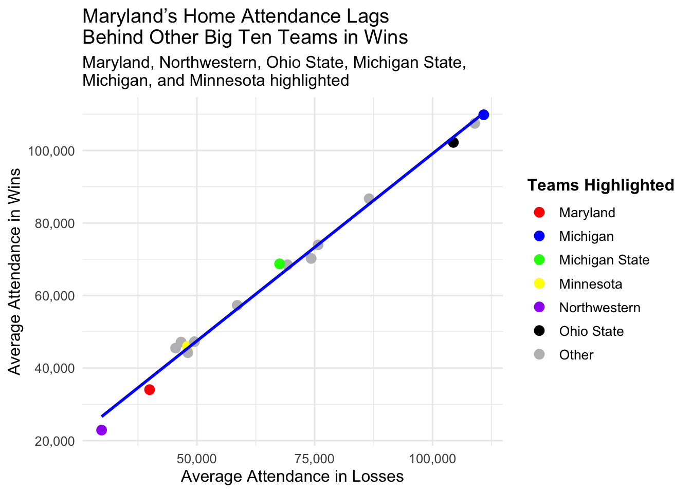
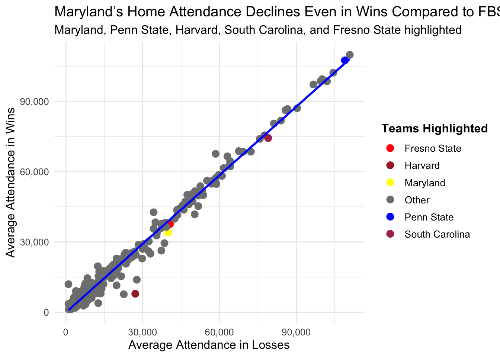

Code
Sys.setenv(CFBD_API_KEY = "nYYDD4adQNxIjanGAuq5+7QJnagAevOptlhW1KHzZMvML+OSi3CwZSUsw9O58aM6")How much do wins actually move the needle for college football attendance? Do fans really show up more when their team’s winning — or are some programs just drawing crowds no matter what? I wanted to find out. Using cfbfastR, I pulled every FBS game from 2021–2024 and compared each team’s average home attendance in wins versus losses. The goal was to see where Maryland fits in — and whether its crowds really dip even when things are going right on the field.
Sys.setenv(CFBD_API_KEY = "nYYDD4adQNxIjanGAuq5+7QJnagAevOptlhW1KHzZMvML+OSi3CwZSUsw9O58aM6")library(tidyverse)── Attaching core tidyverse packages ──────────────────────── tidyverse 2.0.0 ──
✔ dplyr 1.1.4 ✔ readr 2.1.5
✔ forcats 1.0.0 ✔ stringr 1.5.1
✔ ggplot2 3.5.1 ✔ tibble 3.2.1
✔ lubridate 1.9.3 ✔ tidyr 1.3.1
✔ purrr 1.0.2
── Conflicts ────────────────────────────────────────── tidyverse_conflicts() ──
✖ dplyr::filter() masks stats::filter()
✖ dplyr::lag() masks stats::lag()
ℹ Use the conflicted package (<http://conflicted.r-lib.org/>) to force all conflicts to become errorslibrary(cfbfastR)cfbd_team_info(conference = "B1G")── Team information from CollegeFootballData.com ───────────── cfbfastR 2.0.0 ──ℹ Data updated: 2025-11-02 19:10:28 EST# A tibble: 18 × 28
team_id school mascot abbreviation alt_name1 alt_name2 conference division
<int> <chr> <chr> <chr> <chr> <chr> <chr> <lgl>
1 356 Illinois Fight… ILL ILL Illinois Big Ten NA
2 84 Indiana Hoosi… IU IU Indiana Big Ten NA
3 2294 Iowa Hawke… IOWA IOWA Iowa Big Ten NA
4 120 Maryland Terra… MD MD Maryland Big Ten NA
5 130 Michigan Wolve… MICH MICH Michigan Big Ten NA
6 127 Michigan… Spart… MSU MSU Michigan… Big Ten NA
7 135 Minnesota Golde… MINN MINN Minnesota Big Ten NA
8 158 Nebraska Cornh… NEB NEB Nebraska Big Ten NA
9 77 Northwes… Wildc… NU NU Northwes… Big Ten NA
10 194 Ohio Sta… Bucke… OSU OSU Ohio Sta… Big Ten NA
11 2483 Oregon Ducks ORE ORE Oregon Big Ten NA
12 213 Penn Sta… Nitta… PSU PSU Penn Sta… Big Ten NA
13 2509 Purdue Boile… PUR PUR Purdue Big Ten NA
14 164 Rutgers Scarl… RUTG RUTG Rutgers Big Ten NA
15 26 UCLA Bruins UCLA UCLA UCLA Big Ten NA
16 30 USC Troja… USC USC USC Big Ten NA
17 264 Washingt… Huski… WASH WASH Washingt… Big Ten NA
18 275 Wisconsin Badge… WIS WIS Wisconsin Big Ten NA
# ℹ 20 more variables: classification <chr>, color <chr>, alt_color <chr>,
# logo <chr>, logo_2 <chr>, twitter <chr>, venue_id <int>, venue_name <chr>,
# city <chr>, state <chr>, zip <chr>, country_code <chr>, timezone <chr>,
# latitude <dbl>, longitude <dbl>, elevation <chr>, capacity <int>,
# year_constructed <int>, grass <lgl>, dome <lgl>b1g_2021 <- cfbd_game_info(year = 2021, conference = "B1G")
b1g_2022 <- cfbd_game_info(year = 2022, conference = "B1G")
b1g_2023 <- cfbd_game_info(year = 2023, conference = "B1G")
b1g_2024 <- cfbd_game_info(year = 2024, conference = "B1G")
b1g <- bind_rows(b1g_2021, b1g_2022, b1g_2023, b1g_2024)home <- b1g |>
mutate(point_diff = home_points - away_points) |>
filter(!neutral_site, !is.na(attendance))home |>
group_by(win = point_diff > 0) |>
summarize(avg_attendance = mean(attendance))# A tibble: 2 × 2
win avg_attendance
<lgl> <dbl>
1 FALSE 58570.
2 TRUE 70203.home <- b1g |>
filter(!neutral_site, !is.na(attendance)) |>
mutate(win = home_points > away_points)team_summary <- home |>
group_by(home_team, win) |>
summarize(
games = n(),
avg_home_pts = mean(home_points),
avg_opp_pts = mean(away_points),
avg_attendance = mean(attendance)
) |>
arrange(home_team, desc(win))`summarise()` has grouped output by 'home_team'. You can override using the
`.groups` argument.big_ten_teams <- c(
"Illinois", "Indiana", "Iowa", "Maryland", "Michigan", "Michigan State",
"Minnesota", "Nebraska", "Northwestern", "Ohio State", "Penn State",
"Purdue", "Rutgers", "Wisconsin", "USC", "UCLA", "Oregon", "Washington"
)
b1g_only <- team_summary |>
filter(home_team %in% big_ten_teams)b1g_only_long <- home |>
filter(home_team %in% big_ten_teams, !neutral_site, !is.na(attendance)) |>
mutate(result = if_else(home_points > away_points, "Win", "Loss")) |>
group_by(home_team, result) |>
summarize(
games = n(),
avg_home_pts = mean(home_points),
avg_opp_pts = mean(away_points),
avg_attendance = mean(attendance)
) |>
arrange(home_team, desc(result))`summarise()` has grouped output by 'home_team'. You can override using the
`.groups` argument.I initially wanted to make a quick, clean visual that compared how Big Ten teams draw fans when they win versus when they lose — just to see if Maryland really stands out for having that weird drop in attendance after wins. The idea was simple: one line per team, connecting average attendance in losses to average attendance in wins.
But once I built it out, it just didn’t hit the way I hoped. The lines were all pretty flat, and it kind of looked cluttered without really emphasizing the main point. Maryland’s drop-off was technically there, but it didn’t stand out — everything blended together. It felt more like a spreadsheet on a chart than a visual that actually tells a story.
b1g_only_wide <- b1g_only_long |>
select(home_team, result, avg_attendance) |>
pivot_wider(
names_from = result,
values_from = avg_attendance
)b1g_only_wide <- b1g_only_wide |>
mutate(
pct_change = (Win - Loss) / Loss * 100
)b1g_only_wide <- b1g_only_wide |>
filter(!home_team %in% c("Washington", "Oregon"))ggplot(b1g_only_wide, aes(x = Loss, y = Win)) +
geom_point(
aes(
color = case_when(
home_team == "Maryland" ~ "Maryland",
home_team == "Northwestern" ~ "Northwestern",
home_team == "Ohio State" ~ "Ohio State",
home_team == "Michigan State" ~ "Michigan State",
home_team == "Michigan" ~ "Michigan",
home_team == "Minnesota" ~ "Minnesota",
TRUE ~ "Other"
)
),
size = 3
) +
geom_smooth(method = "lm", color = "blue", se = FALSE) +
scale_color_manual(
values = c(
"Maryland" = "red",
"Northwestern" = "purple",
"Ohio State" = "black",
"Michigan State" = "green",
"Michigan" = "blue",
"Minnesota" = "yellow",
"Other" = "gray"
),
name = "Teams Highlighted"
) +
scale_x_continuous(labels = scales::comma) +
scale_y_continuous(labels = scales::comma) +
labs(
title = "Maryland’s Home Attendance Lags \nBehind Other Big Ten Teams in Wins",
subtitle = "Maryland, Northwestern, Ohio State, Michigan State, \nMichigan, and Minnesota highlighted",
x = "Average Attendance in Losses",
y = "Average Attendance in Wins"
) +
theme_minimal(base_size = 12) +
theme(
legend.position = "right",
legend.title = element_text(size = 12, face = "bold"),
legend.text = element_text(size = 10)
)`geom_smooth()` using formula = 'y ~ x'
This scatterplot compares average home attendance in wins versus losses for Big Ten football teams from 2021 to 2024. Each point represents one program, showing how its home crowds differ based on game outcomes. The strong upward trendline indicates that attendance generally rises for teams when they win. Maryland, highlighted in red, sits below the trend — signaling that it draws smaller home crowds for wins than most of its Big Ten peers.
all_2021 <- cfbd_game_info(year = 2021)
all_2022 <- cfbd_game_info(year = 2022)
all_2023 <- cfbd_game_info(year = 2023)
all_2024 <- cfbd_game_info(year = 2024)
all_games <- bind_rows(all_2021, all_2022, all_2023, all_2024)home <- all_games |>
filter(!neutral_site, !is.na(attendance)) |>
mutate(result = if_else(home_points > away_points, "Win", "Loss"))all_only_long <- home |>
group_by(home_team, result) |>
summarize(
games = n(),
avg_home_pts = mean(home_points),
avg_opp_pts = mean(away_points),
avg_attendance = mean(attendance)
) |>
arrange(home_team, desc(result))`summarise()` has grouped output by 'home_team'. You can override using the
`.groups` argument.all_only_wide <- all_only_long |>
select(home_team, result, avg_attendance) |>
pivot_wider(names_from = result, values_from = avg_attendance) |>
mutate(pct_change = (Win - Loss) / Loss * 100)|>
drop_na()ggplot(all_only_wide, aes(x = Loss, y = Win)) +
geom_point(
aes(
color = case_when(
home_team == "Maryland" ~ "Maryland",
home_team == "Penn State" ~ "Penn State",
home_team == "Harvard" ~ "Harvard",
home_team == "South Carolina" ~ "South Carolina",
home_team == "Fresno State" ~ "Fresno State",
TRUE ~ "Other"
)
),
size = 3
) +
geom_smooth(method = "lm", color = "blue", se = FALSE) +
scale_color_manual(
values = c(
"Maryland" = "yellow",
"Penn State" = "blue",
"Harvard" = "brown",
"South Carolina" = "maroon",
"Fresno State" = "red",
"Other" = "gray50"
),
name = "Teams Highlighted"
) +
scale_x_continuous(labels = scales::comma) +
scale_y_continuous(labels = scales::comma) +
labs(
title = "Maryland’s Home Attendance Declines Even in Wins Compared to FBS",
subtitle = "Maryland, Penn State, Harvard, South Carolina, and Fresno State highlighted",
x = "Average Attendance in Losses",
y = "Average Attendance in Wins"
) +
theme_minimal(base_size = 12) +
theme(
legend.position = "right",
legend.title = element_text(size = 12, face = "bold"),
legend.text = element_text(size = 10)
)`geom_smooth()` using formula = 'y ~ x'
This scatterplot compares home attendance in wins versus losses for every FBS football team from 2021 to 2024. Each point represents one program, showing how average crowds change based on game outcomes. The strong diagonal trendline indicates that most teams draw similar attendance regardless of result, with slightly higher crowds in wins. Maryland, highlighted in red, falls below that trend — showing that its home attendance tends to drop in victories and peak during higher-profile losses.